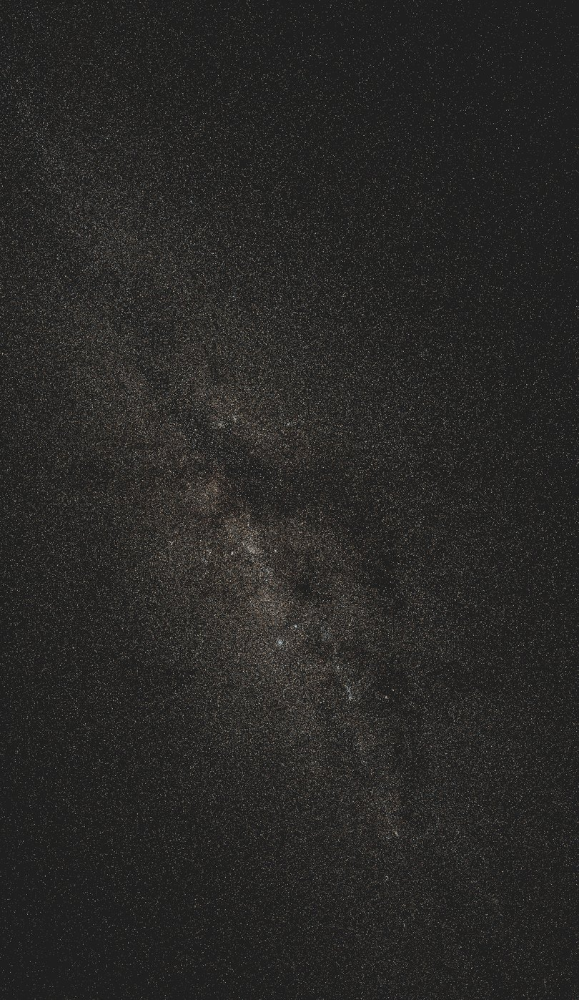
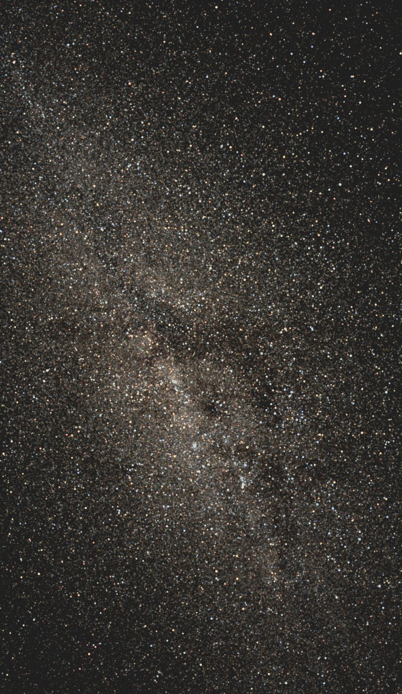
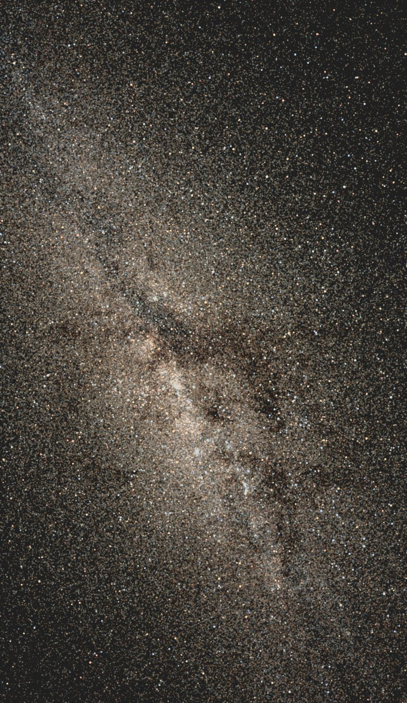
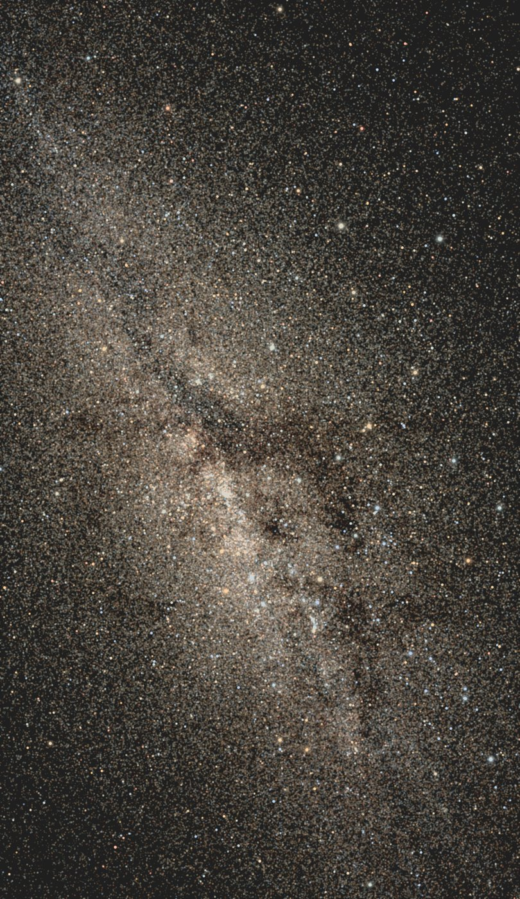
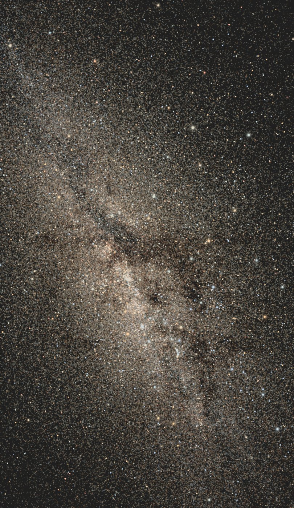
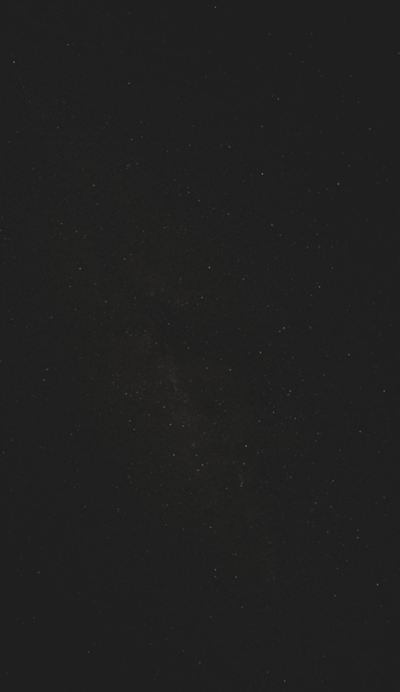
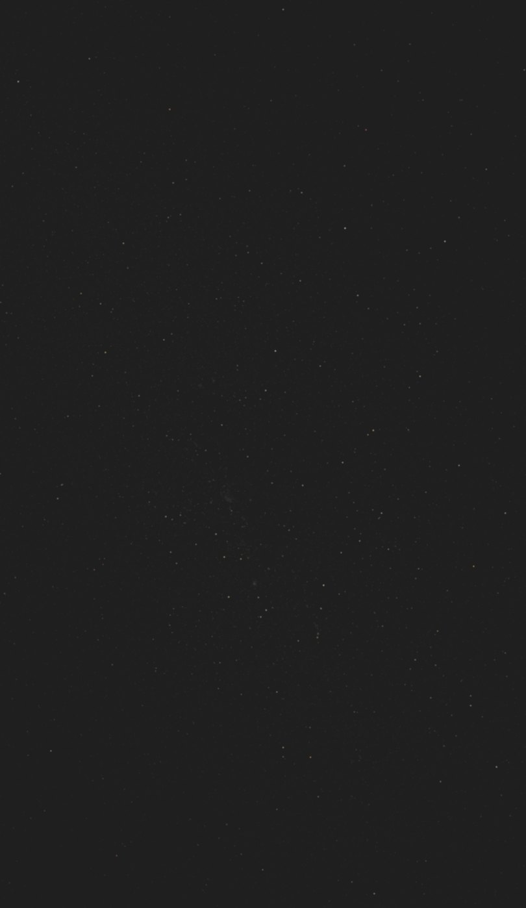

写给想知道"为什么这样画"的人
渲染原理深度解读
主页上那些图没有用任何银河贴图、尘埃素材或手绘辉光，画面里的每一个像素都能追溯到 Gaia 星表里某一批真实恒星，加上几条有明确物理依据的显示规则。这一页讲清楚这些规则是什么、为什么是它们，最后用一组消融实验展示：从最朴素的画法出发，每加一条规则，画面向真实推进一步。
两条贯穿始终的原则
第一，物理层和显示层严格分开。恒星的位置、亮度、颜色由星表数据和坐标变换决定，这部分不为视觉效果让步；屏幕上最终的观感由显示参数控制，这部分明确承认自己是显示决策。两套体系各自独立，显示参数永远不伪装成天体物理常数。
第二，每个显示参数都要有物理锚点，并且在命令行里显式暴露。下面会看到，连"暗星该补偿多少倍亮度"这样听起来像美学调参的数字，也能从星表自己的统计里推出来。这样做的直接好处是：本页所有实验图都附了完整命令，任何人 clone 仓库都能逐字复现。
五个关键技术决策
一、亮度锚定在实测的人眼极限上
星等到亮度的换算是标准的 Pogson 公式：每差 5 个星等，亮度差 100 倍。问题是把这个亮度画到屏幕上时，"多亮算可见"需要一个锚点。我们用的是天文爱好者社区长期积累的经验数据：每个 Bortle 光污染等级对应一个裸眼极限星等（NELM），比如顶级暗空约 7.8 等、明亮郊区约 5.3 等、市中心约 4.0 等。渲染时，恰好处在极限星等位置的恒星被画成天空背景亮度的固定比例（默认 0.5 倍），更亮的星按 Pogson 比例往上走。这样"什么星看得见"不是调出来的，是从观测经验表里读出来的。
二、所有恒星共用同一个 PSF
直觉上会想给亮星画小一点、给暗星糊一点，或者反过来。但真实光学系统里，点扩散函数（PSF，一颗点光源在成像面上的弥散形状）是光学系统的属性，不是恒星的属性：同一台相机拍出来，织女星和一颗 10 等星的光斑形状完全相同，差别只在振幅。我们早期版本给亮星和暗星用了不同的 PSF，放大看就露馅了——亮星是孤零零的锐利噪点，暗星糊成一片磨砂底，两个族群之间没有过渡。现在的版本里所有恒星共用一个约 1.1 像素的高斯核，亮星看起来更大这件事，交给下一条规则去产生。
顺带一个实现层面的事实：PSF 是对整幅画布做一次卷积，代价和星数无关。"一百多万颗暗星是不是该省一点"是个伪问题。
三、亮星的大小来自饱和溢出，不是更大的笔刷
真实照片里亮星显大有两个机制：传感器（或视网膜）在亮星核心处饱和，同样的光斑轮廓有更宽的部分越过显示上限；散射和衍射把溢出的能量摊成光晕。我们按这个机制实现：线性亮度超过饱和线的部分被截下来，按两个更宽的高斯（3 像素和 9 像素）重新散布回画面。关键性质是能量守恒——溢出翼只是把过亮核心的光摊开，不无中生有。这样恒星的视大小随亮度连续增长，从暗星的单像素颗粒到亮星的饱和盘面之间没有任何分段缝。
饱和线挂在星等阶梯上，不挂在某个固定亮度上。我们在这里踩过一个坑：当模拟"眼睛灵敏度提高 4 等"时，所有星光等比放大 40 倍，饱和线如果不跟着走，画面里四分之一的像素会被截断、近四成的星光被摊成糊翼，整条银河洗成一片柔光。修正后的饱和线表达成"比极限星等亮若干等的星开始饱和"，随亮度阶梯平移，任何灵敏度设定下饱和的都是该饱和的那批星。
四、暗星截断补偿：增益不是拍脑袋的数
渲染用的星表截断在 11 等（再暗的星数量太大，全天就不止亿级了）。但肉眼看到的银河乳光，恰恰主要来自 11 等以下几十亿颗不可分辨恒星的积分光。怎么补？我们让 9 到 11 等的暗星亮度乘一个增益，代理整个更暗的族群——它们跟踪的是同一个空间分布。
增益的数值可以从星表自己推出来。统计星表的光度函数（每个星等区间有多少颗星），9 到 11 等区间的斜率约 0.41，意味着每个星等区间贡献的总光通量几乎相等；按这个斜率外推到 21 等，缺失的积分光约是 9-11 等区间的 5.8 倍，考虑到斜率在更暗端实际变缓，合理的增益区间是 4 到 7，我们取 4.2。这一条还有个免费的副产品：银河里的尘埃暗带在星表中表现为"那里缺暗星"，增益放大的是星数本身，所以乳光和暗带同时出现——不需要任何尘埃贴图。
五、人眼对点源和弥散光有两套阈值
最后一条规则解释"银河为什么在城市里彻底消失，而不是变淡到还剩一点"。人眼探测一颗点状的星，和察觉一片大面积的微弱亮光，是两套完全不同的机制：前者由极限星等描述，后者服从 Weber 对比阈值——低于天空背景百分之几的弥散结构，眼睛就是看不见，哪怕相机长曝光拍得清清楚楚。我们测量了各级光污染下银河带相对天空的对比度：顶级暗空 93%，明亮郊区 9%，市中心 2.8%。如果显示管线把任何正对比都画出来，市中心的面板里就会残留一条隐约的银河，与真实经验相悖。
实现上，用一个 8 像素的高斯把画面分成弥散光（低频）和点源（高频）两部分，弥散光减去 3.5% 倍天空亮度的阈值，点源原样保留。施加之后，银河按 Bortle 分级的原始描述在 7 级左右从画面里消失，8、9 级只剩亮星；而顶级暗空几乎无感（93% 只降到 89%）。这个阈值刻意不随灵敏度增益缩放：双筒望远镜把弥散光的对比放大过阈值后，银河重新可见——这正是器材党在城里也能扫到银河的机制。
消融实验：从最朴素的画法到最终效果
下面固定同一片天空（广州纬度、顶级暗空、灵敏度 +2 等，即主页 hero 图的设定），从完全不真实的画法开始，每一步只打开一条规则。所有图都用仓库里的同一条命令渲染，只换参数开关。
每颗星一个像素，关掉所有规则
一百多万颗星按真实位置和 Pogson 亮度直接落在单个像素上。银河的密度起伏其实已经在了——数据本身就带着它——但画面像撒了一层盐：所有星都是同样大小的硬颗粒，亮星和暗星只有明暗差没有大小差，没有任何照片的质感，缩小一半就开始闪烁断裂。
--psf-core-px 0 --faint-gain 1 \
--sat-over-sky 0 --ext-threshold 0
给所有星同一个光学弥散
加上 1.1 像素的共享高斯 PSF，盐粒感消失了：星点有了真实成像系统的形态，密集区连成柔和的纹理。但亮星依然只是"更亮的小点"，乳光的厚度和暗带的对比也还差一截——星表在 11 等截断，缺失的暗星积分光没有补上。
--psf-core-px 1.1 --faint-gain 1 \
--sat-over-sky 0 --ext-threshold 0
乳光变厚，暗带加深
9-11 等暗星乘上 4.2 倍增益，代理 11 等以下不可分辨族群的积分光。和上一步对照：银河带区的中位亮度提高约三分之一，乳光变得厚实，尘埃暗带的对比明显加深——增益放大的是星数分布本身，哪里被尘埃挡住了星，哪里就同步缺光，所以乳光和暗带是一起变强的。
--psf-core-px 1.1 --faint-gain 4.2 \
--sat-over-sky 0 --ext-threshold 0
亮星长出盘面和光晕
打开饱和溢出，超过饱和线的能量被能量守恒地摊进散射翼。恒星的视大小从此随亮度连续增长：暗星是单像素颗粒，中等星是小圆点，亮星是带光晕的饱和盘面。星空照片里那种"亮星压得住场面"的层次感来自这一步。
--psf-core-px 1.1 --faint-gain 4.2 \
--sat-over-sky 6 --ext-threshold 0
完整模型
最后打开人眼的弥散光对比阈值，得到正式管线的完整输出。在这个暗空场景里它几乎不改变画面（银河对比远高于阈值），它真正的作用在光污染下——见下面的对比。
默认参数（全部规则开启）
Weber 阈值在光污染下的作用
同一片天空，Bortle 7（城市边缘）、裸眼。左边关闭阈值：银河带残留一条隐约的痕迹，这是相机才能看到的对比度。右边打开阈值：弥散光低于人眼能察觉的水平，被显示层移除，只剩亮星——这才是城市边缘抬头真实看到的天空。


想看全部实现细节（坐标变换、tone mapping、共享亮度基准、视频管线的饱和锚点等），仓库里的 docs/rfc.md 是完整的设计文档，docs/working.md 记录了每一次调参和踩坑的过程。